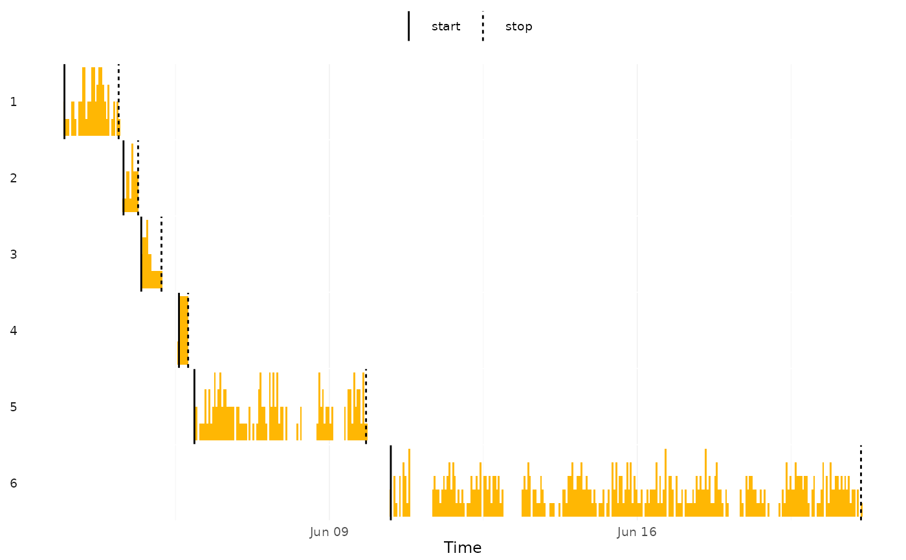

Histogram of observation times by cluster
hist.ctdf.RdPlot per-cluster histograms of observation times with cluster start/stop markers, stacked vertically.
Usage
# S3 method for class 'ctdf'
hist(x, binwidth = 3600, ...)Examples
require(clusterTrack.Vis)
data(pesa56511)
ctdf = as_ctdf(pesa56511, time = "locationDate") |> cluster_track()
#> → Find putative cluster regions.
#> ! Repairing[1]...
#> → Local clustering.
#> ! Repairing[2]...
#> ! Compute lof scores...
hist(ctdf)
